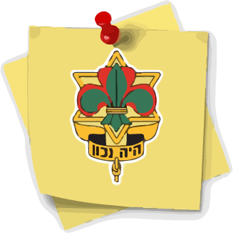

הצופים:

הסיסמא שלנו: "היה נכון".
ימי פעילות: ימי שלישי ושישי אחר-הצהריים.
גילאים: כיתות ד'-י"ב'
פעילויות עיקריות: מחנה קיץ, יום הצופה, טקסים ואירועים, הפנינג תחילת שנה ועוד..

הנוער העובד והלומד
הסיסמא שלנו: "חד נס" – גם המנון התנועה.
ימי פעילות: משתנה בהתאם סניף לסניף.
גילאים: כיתות ד'-י"ב'
פעילויות עיקריות: מחנה קיץ, קורסי הכשרה מדצ''ים ומשצ''ים, טקסים ועוד..
מכבי צעיר
הסיסמא שלנו: "נפש בריאה בגוף בריא"
ימי פעילות: שלישי ושישי.
גילאים: כיתות ג'-י"ב'
פעילויות עיקריות: מחנה קיץ, יום הלפיד, טקסים נוספים, כנס חשיפה ועוד...